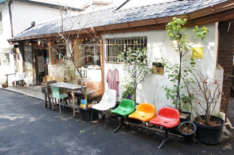
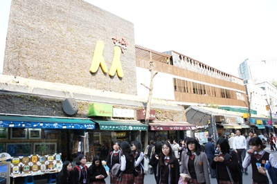

2016 韓國自助行
簡易行程分享:
- 明洞
- 江村鐵道、晨靜樹木園
- 三清洞、景福宮、仁寺洞、東大門
- 汝夷島、漢江公園
- 梨大、弘大
- 首爾塔
【Day 1】
第一天抵達韓國時間已晚，吃了家有名的
全洲中央會館
，逛逛明洞就結束了。
這裡的石鍋拌飯真的很好吃，和台灣吃到的味道不太一樣喔，老闆也很親切，還過來幫我們拍照。
【Day 2】
第二天離開首爾來到江村，享受一下遠離鬧區的悠閒。
江村鐵道：一邊騎著協力車，一邊欣賞沿途風景。
晨靜樹木園：是個風景優美，擁有許多花花草草的地方，韓劇經常來這邊取景。
【Day 3】
這天的行程充滿著文藝氣息，三清洞、景福宮、仁寺洞都是保有韓國文化很著名的景點。
三清洞

景福宮
仁寺洞

【Day 4】
賞櫻行程，街道的兩旁伴隨著開的滿滿的櫻花，很壯觀，很美，享受到被櫻花雨打到的感覺。
【Day 5】
到
梨花女子大學
參觀，校內有著名景點
大峽谷
，真的很壯觀。

【Day 6】
最後一天，最後的行程 : 首爾塔。
眺望著整個首爾的美景，回憶著旅程的點滴，帶著美好的記憶結束這一趟旅程。
【返回首頁】